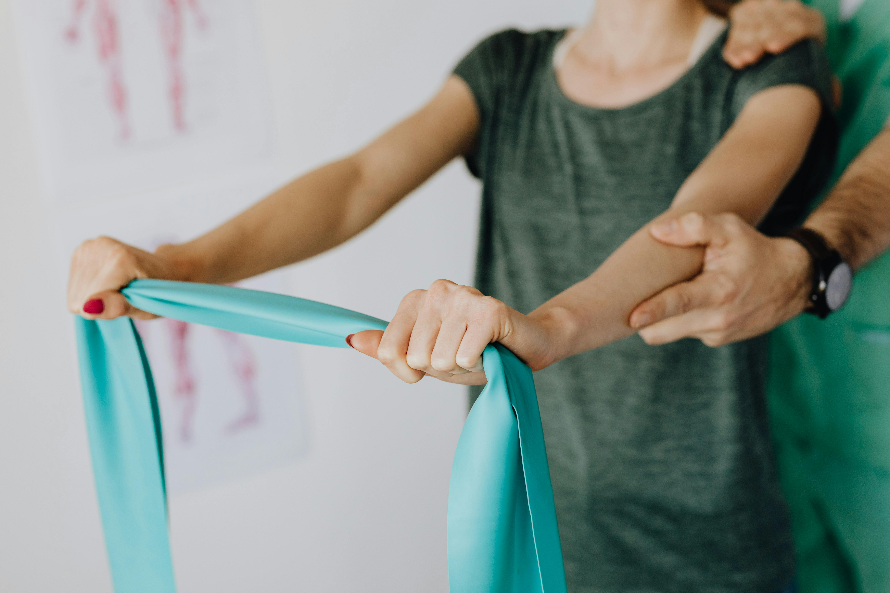

Traumatisme ortopedice
Recuperare în urma traumatismelor ortopedice, după imobilizare, pentru refacerea capacității de mișcare a membrului afectat și a forței musculare!
În orice moment al vieții pot să apară diverse afecțiuni sau traumatisme, care ne limitează capacitatea de mișcare, starea de bine fizică dar și emoțională!

Venim în ajutorul tău, cu rabdare și empatie! Aici vă prezentăm o selecție, a celor mai comune afecțiuni pe care le recuperăm, însă lista poate continua de aceea nu ezitați să ne cereți ajutorul:
Recuperare în urma traumatismelor ortopedice, după imobilizare, pentru refacerea capacității de mișcare a membrului afectat și a forței musculare!
Recuperare pre-operatorie și post-operatorie: pregătirea pacientului înainte de o intervenție chirurgicală (ex. Artroscopie genunchi, Artroplastică de genunchi, Protezare șold - genunchi - gleznă) este esențială în recuperarea post intervenție.
Recuperare în afecțiunile coloanei vertebrale: scolioza, cifoza, lordoza, discopatie, hernie de disc, osteofite la nivelul coloanei vertebrale
Recuperare post chirurgical la nivelul coloanei vertebrale: hernii de disc, nucleoplastie, vertebroplastie.
Recuperare în Sindromul de coada de cal, afecțiuni ale coccisului - cocidinia.
Recuperare în cazul artrozelor, coxartroza și gonartroza.
Recuperare în afecțiuni inflamatorii: periartrita scapulo-humerală, poliartrita reumatoida, fibromialgia, spondilita anchilozantă, Golf Elbow, Epicondilita, Tenis Elbow.
Recuperare în afecțiuni neurologice.
Recuperare post-oncologică.
Spargerea osteofitelor calcaneene, de pe fascia plantară, a osteofitelor de la nivelul articulațiilor - umăr, șold, genunchi.